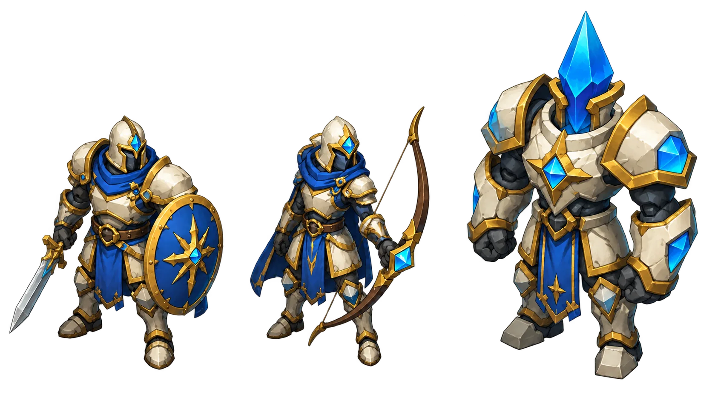
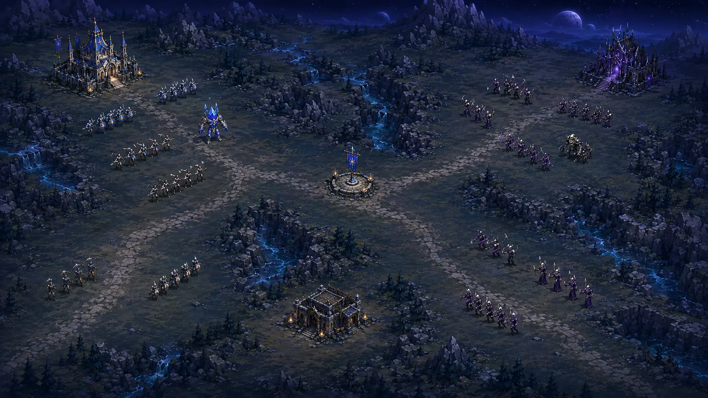
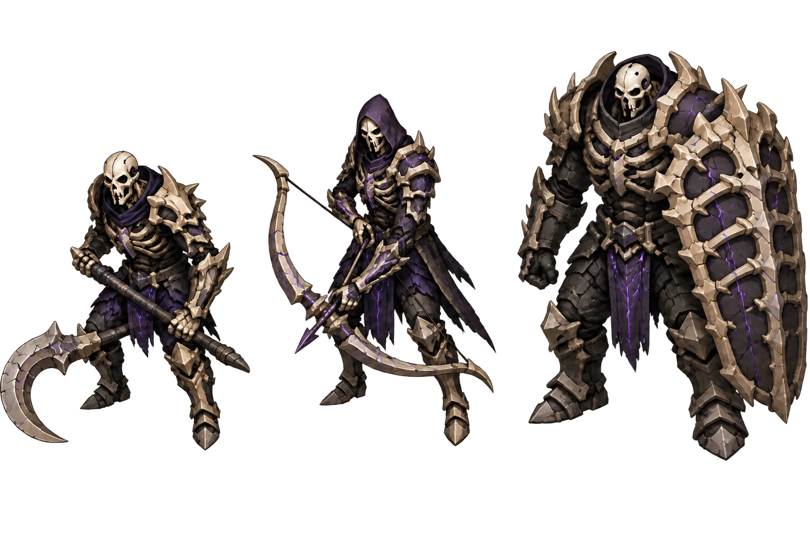
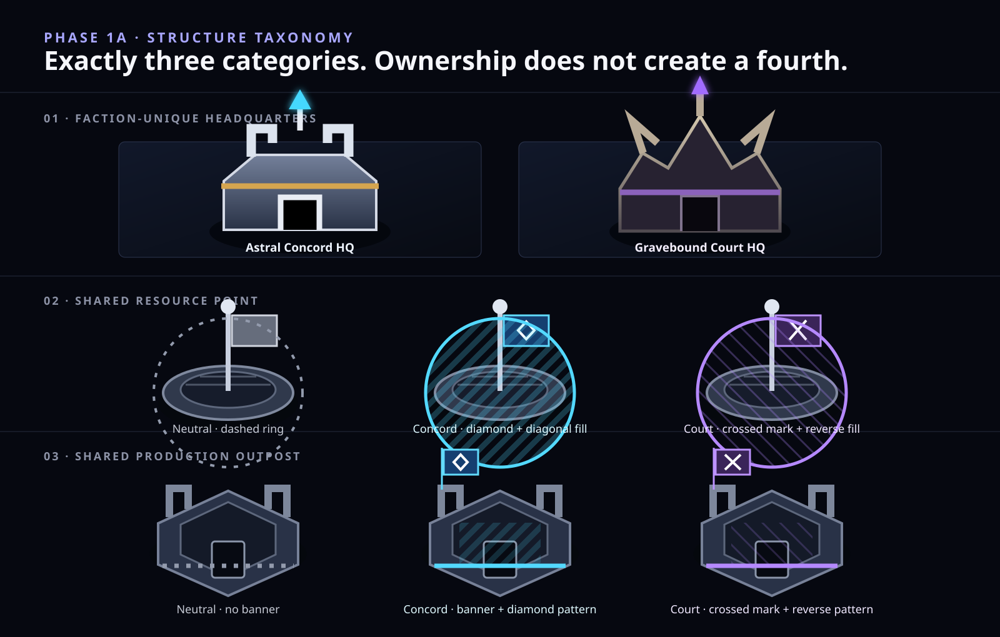
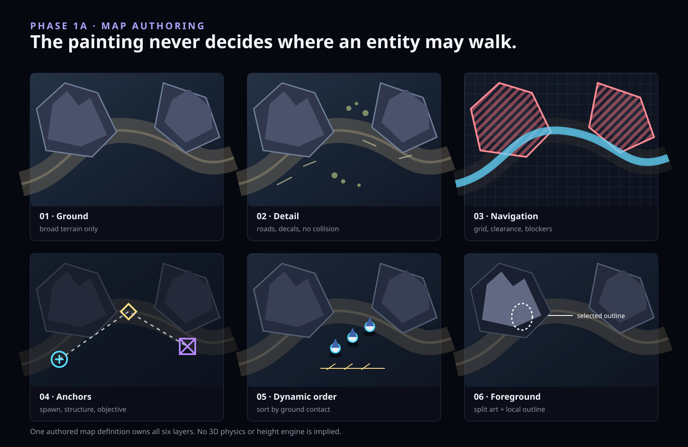
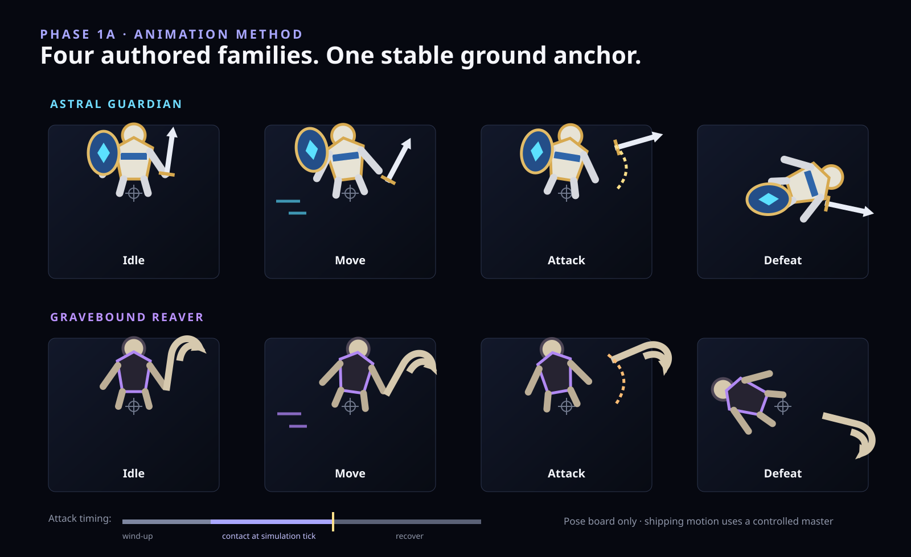

Opening faction A
Astral Concord
◆ Diamond owner mark
- MELEEDawn Guard
- RANGEDStarbow
- SIGNATUREAegis Titan
Ordinary zoom
Minimum silhouette
Draft · Owner review needed
Phase 1A · Production feasibility
This replacement proof translates the approved mood into practical RTS scale. It tests one crowded map, two factions with three representative roles each, exactly three structure categories, an authored layer model, and four animation families before a renderer or full roster is built.
01 Actual gameplay scale
Ordinary fighters remain deliberately small. Formation, weapon profile, faction massing, and compact ownership marks do the reading; faces and costume engraving do not. Ridges divide routes without becoming a painted collision guess.
Visual target only · not a map layout balance claim

02 Entity method
The full six-role factions wait for Phase 1B. Here, melee, ranged, and signature bodies test the expensive part first: shape, production detail, ownership, and the ability to survive ordinary and minimum zoom.
Faction names are public; role names remain internal contracts
Opening faction A

Opening faction B

State cues do not rely on hue:
◆ Player 1 × Player 2 ◎ Selected ⌁ Focus target03 Structure taxonomy
Resource Points and Production Outposts keep one shared world silhouette. Capture changes flag, geometric mark, edge treatment, and directional pattern—not the model or the category.
Exactly three categories · no disguised fourth structure

04 Map and occlusion
The same map excerpt separates quiet ground, decoration, navigation, anchors, dynamic depth order, and foreground art. A ridge can hide part of an entity without making its painted pixels authoritative.
Invisible grid or mask owns walkability · no height engine

05 Animation feasibility
Idle, move, attack or cast, and defeat are enough for the first playable slice. Wind-up, contact, and recover live inside attack. Every pose retains the same ground anchor, while the simulation tick—not the picture—decides when a hit happens.
Pose method only · generated frames are not a shipping animation sequence

Proposed production boundary
Owner decision required
Approval closes Phase 1A only. It authorizes the complete Phase 1B visual and interaction lock; it does not authorize gameplay implementation, a final sprite atlas, multiplayer, a tag, or a release.